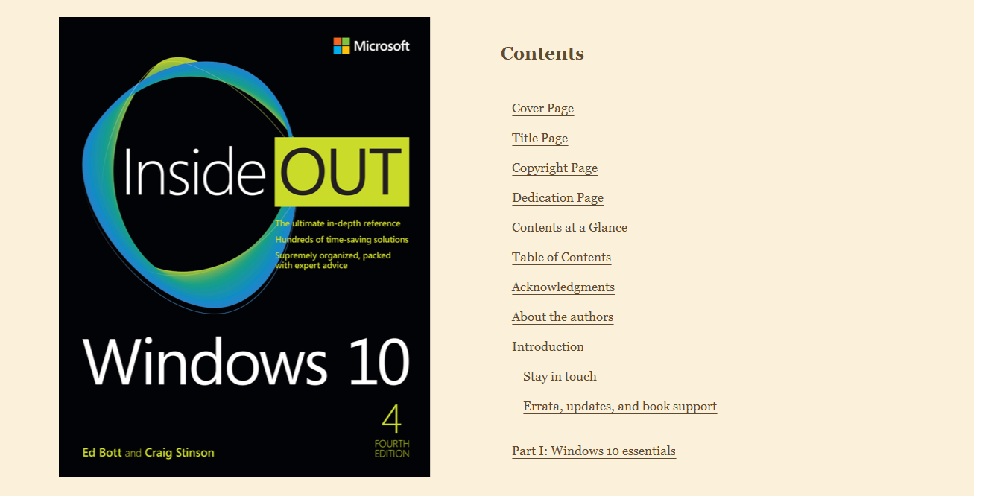
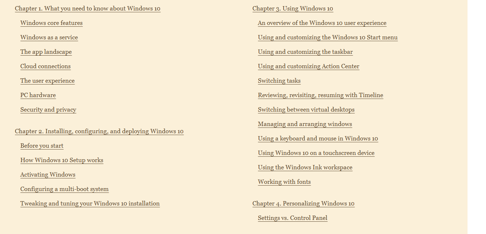
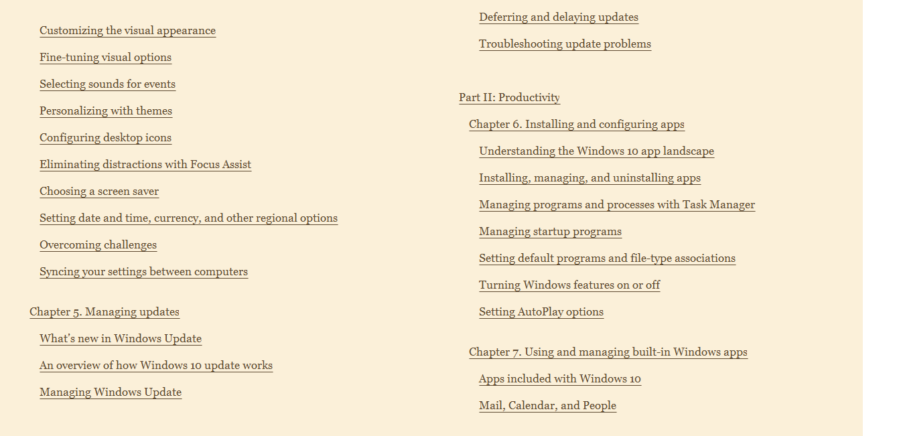
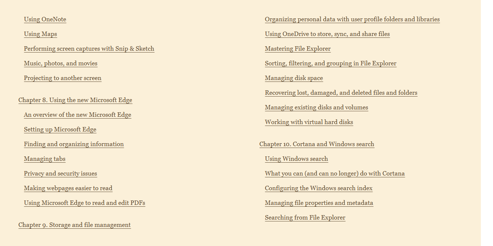
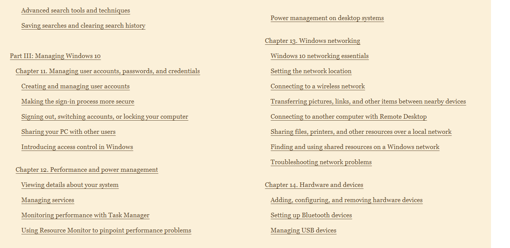
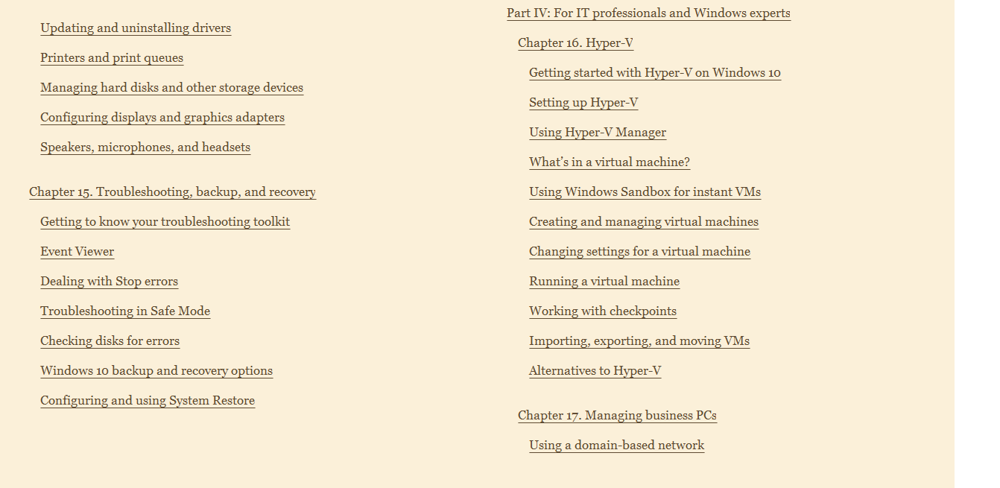
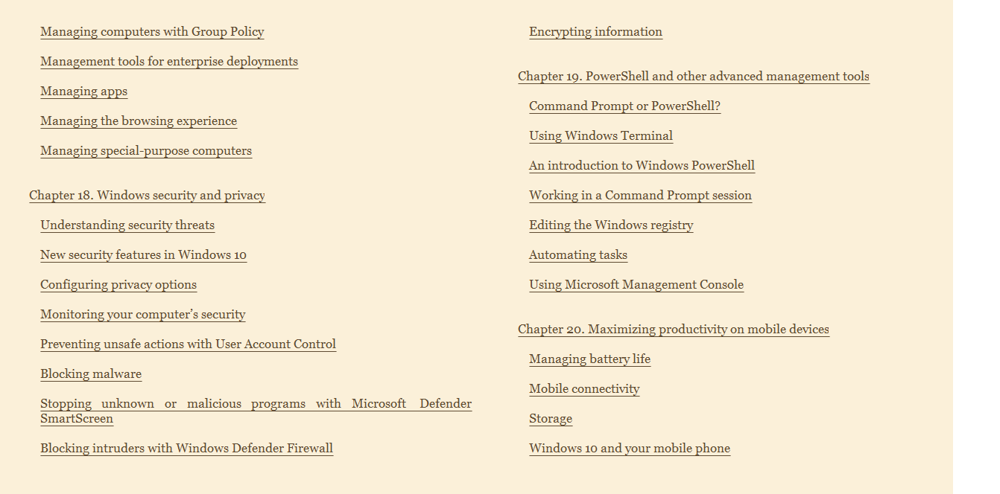

Table of Contents.
Part I → Windows 10 essentials.
Chapter 1 - What you need to know about Windows 10.
Chapter 2 - Installing, configuring, and deploying Windows 10.
Chapter 3 - Using Windows 10.
Chapter 4 - Personalizing Windows 10.
Chapter 5 - Managing updates.
Part II → Productivity.
Chapter 6 - Installing and configuring apps.
Chapter 7 - Using and managing built-in Windows apps.
Chapter 8 - Using the new Microsoft Edge.
Chapter 9 - Storage and file management.
Chapter 10 - Cortana and Windows search.
Part III → Managing Windows 10.
Chapter 11 - Managing user accounts, passwords, and credentials.
Chapter 12 - Performance and power management.
Chapter 13 - Windows networking.
Chapter 14 - Hardware and devices.
Chapter 15 - Troubleshooting, backup, and recovery.
Part IV → For IT professionals and Windows experts.
Chapter 16 - Hyper-V.
Chapter 17 - Managing business PCs.
Chapter 18 - Windows security and privacy.
Chapter 19 - PowerShell and other advanced management tools.
Chapter 20 - Maximizing productivity on mobile devices.
Details:







Class Notes